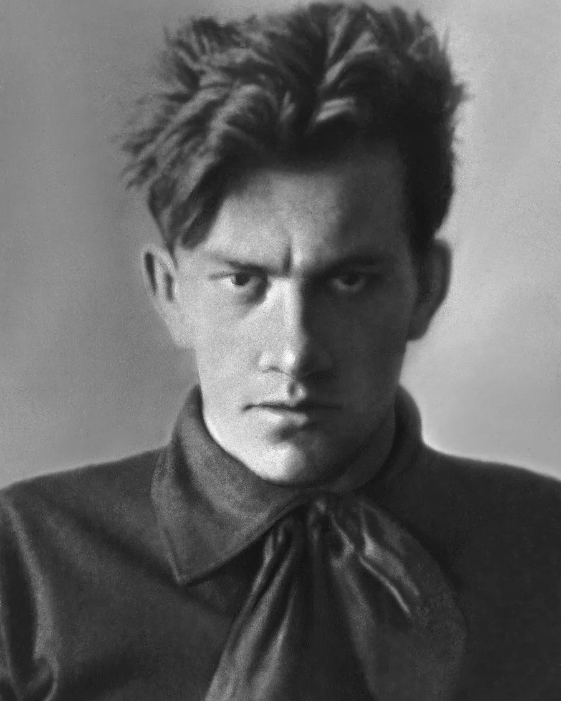

В 1928–1929 годах Маяковский написал сатирические пьесы «Клоп» и «Баня». Обе премьеры прошли в Театре Мейерхольда. Поэт был вторым режиссером, он следил за оформлением спектакля и работал с актерами: начитывал фрагменты пьесы, создавая нужные интонации и расставляя смысловые акценты.
Обе пьесы вызвали ажиотаж. Одни зрители и критики видели в произведениях сатиру на бюрократию, а другие — критику советского строя. «Баню» поставили лишь несколько раз, а после запретили — до 1953 года.
 Лояльное отношение властей к «главному советскому поэту» сменилось прохладой. В 1930 году ему впервые не одобрили выезд за границу. На поэта стала яростно нападать официальная критика. Его упрекали за сатиру по отношению к явлениям, якобы побежденным, например той же бюрократии, и чиновническим проволочкам. Маяковский решил провести выставку «20 лет работы» и представить на ней результаты своего многолетнего труда. Он сам отбирал газетные статьи и рисунки, расставлял книги, развешивал по стенам плакаты. Поэту помогали Лиля Брик, его новая возлюбленная актриса Вероника Полонская и сотрудник Государственного литературного музея Артемий Бромберг.
В день открытия зал для гостей был переполнен. Однако, как вспоминал Бромберг, на открытие не пришел никто из представителей литературных организаций. Да и официальных поздравлений поэта с двадцатилетием работы тоже не было.
Непризнание усугубила личная драма. Владимир Маяковский, влюбленный в Полонскую, требовал, чтобы она ушла от мужа, бросила театр и поселилась с ним в новой квартире. Как вспоминала актриса, поэт то устраивал сцены, то успокаивался, потом снова начинал ревновать и требовать немедленного решения. Одно из таких объяснений стало роковым. После ухода Полонской Маяковский покончил с собой. В предсмертном письме он просил «товарища правительство» не оставлять его семью: «Моя семья — это Лиля Брик, мама, сестры и Вероника Витольдовна Полонская. Если ты устроишь им сносную жизнь — спасибо».
После смерти Маяковского весь архив поэта отошел Брикам. Лиля Брик пыталась сохранить память о его творчестве, хотела создать мемориальную комнату, но постоянно натыкалась на бюрократические препоны. Поэта почти не издавали. Тогда Брик написала письмо Иосифу Сталину. В своей резолюции Сталин назвал Маяковского «лучшим и талантливейшим поэтом советской эпохи». Резолюцию напечатали в «Правде», произведения Маяковского стали издавать огромными тиражами, а его именем называть улицы и площади Советского Союза.